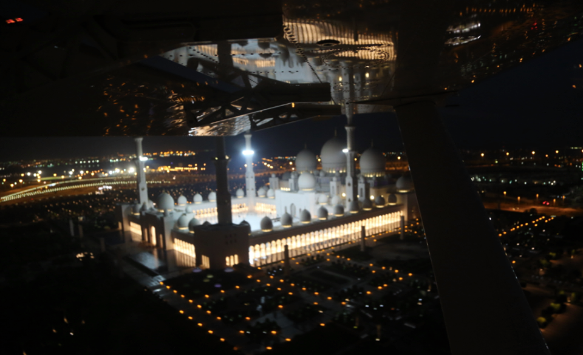

Après le Pakistan, nous mettons le cap vers les pays du Golfe !
Le 1er de la liste : Les Emirats Arabes Unis. Nous survolons le désert des heures durant, puis Oman (Muscat) et enfin nous nous posons à Abu Dhabi avant le coucher du soleil.
En finale nous admirons la grande mosquée illuminée, et à l'atterrissage Adrien se trouve face-à-face à une vieille connaissance : c'est Mario, son ami de l'Université Cranfield ! Il travaille à l'aéroport d'Abu Dhabi, et a reconnu la voix d'Adrien à la radio. Nous passons une super soirée avec lui et sa fiancée Luciana.

Puis à peine atterris, un pilote emirati vient nous saluer et nous questionner sur notre drôle d'engin, puis décide de nous inviter diner chez lui dans les jours à venir, pour nous présenter ses amis.
Et dans le même temps, nous rencontrons aussi Marie et Martin, un super couple d'enseignants du Lycée Français Théodore Monot, qui nous accueillent chez eux et ont organisé le lendemain une présentation devant leurs élèves de primaire et maternelle.
A peine arrivées, déjà 5 nouveaux amis ! Ca s'appelle de la chance !